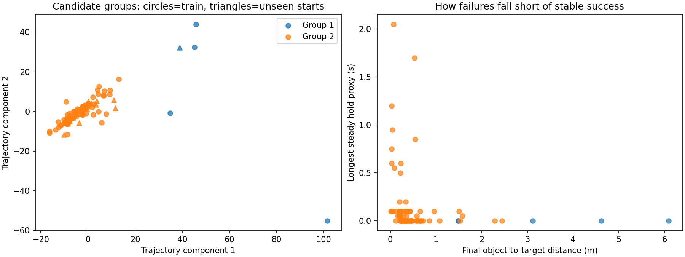
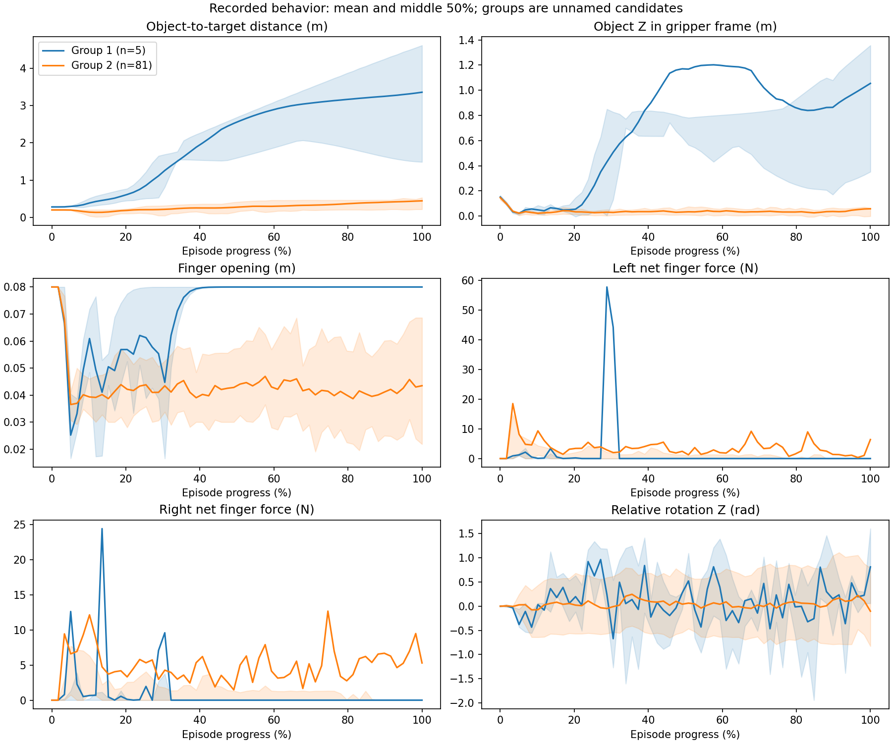

# Failure discovery pilot
Analyzed 120 saved episodes: 86 original failures and 34 original successes.
Found **2 candidate behavior groups**. These are not verified physical failure types.
- Failure group sizes: {'group_1': 5, 'group_2': 81}. Small groups may be outliers rather than failure types.
- Held-out silhouette: 0.5600574716834247. Higher indicates more separated groups; negative indicates overlap.
- Mean seed-subset agreement (ARI): 0.625. One means identical assignments up to group names; zero is chance-level agreement.
- Seed-subset refits collapsing to one held-out group: 3/8.
- Stable-success proxy: 29 episodes. This uses provisional thresholds and does not replace original success.
See scores.json for all assumptions and limitations. Next: inspect representatives, check threshold sensitivity, and reproduce groups on a larger sample. Physical settings are revealed in separate CSVs after grouping; no causal conclusion is established.


Episode metrics · Scores and assumptions · Representative episodes